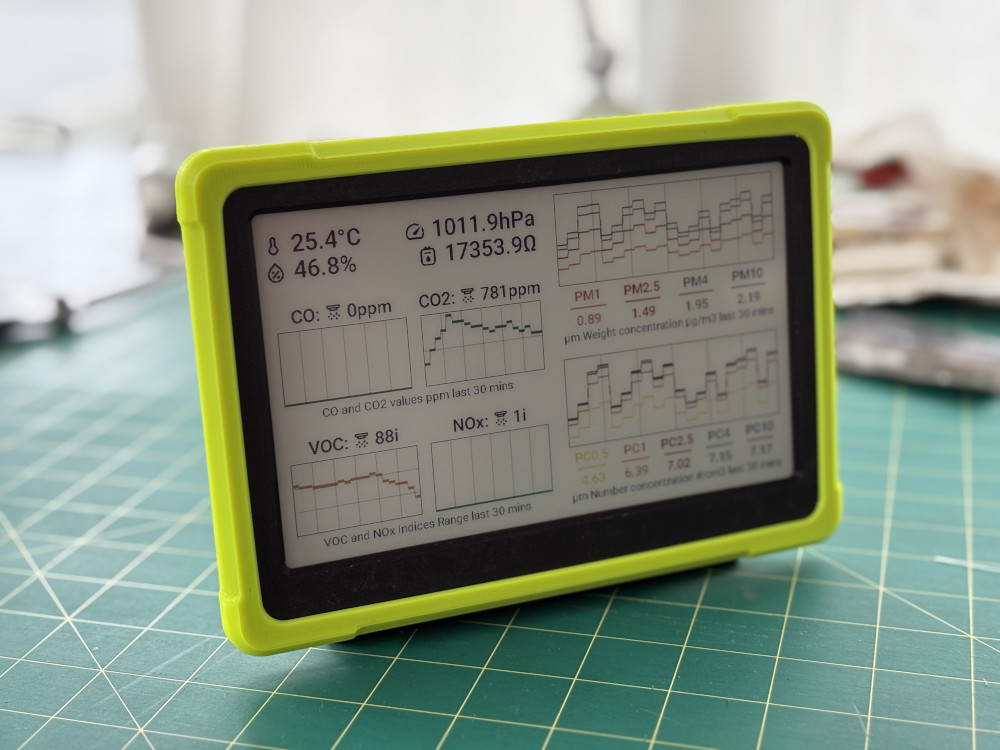
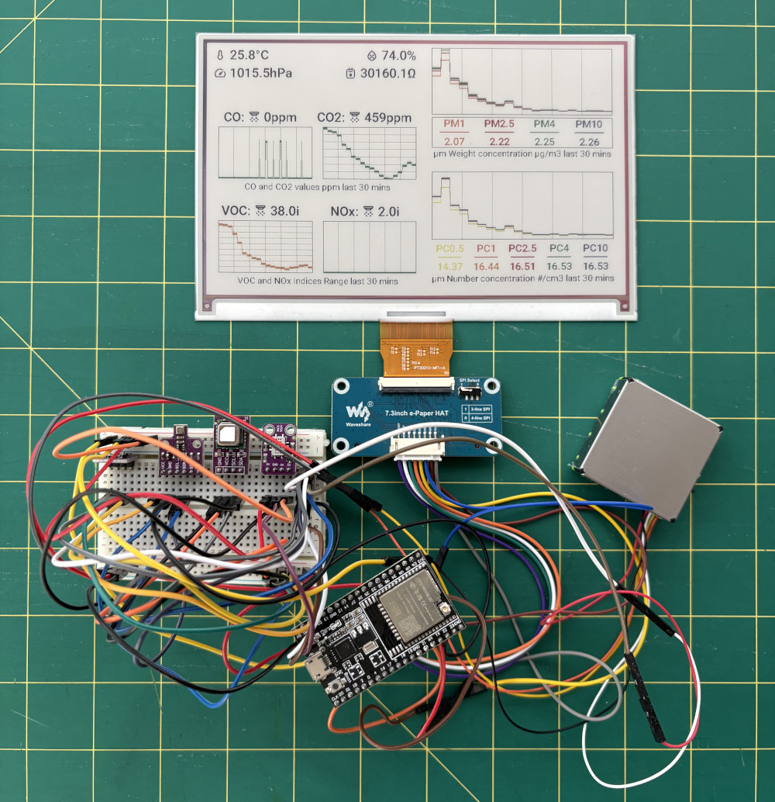
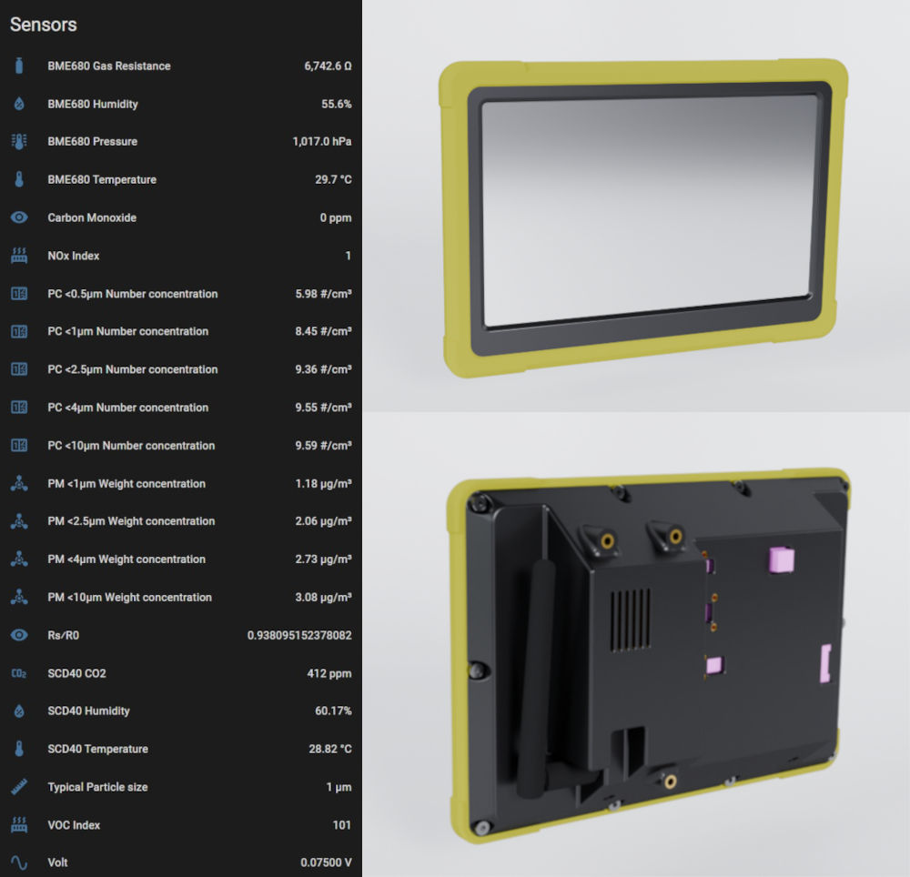

This project aimed to achieve a starting point measured baseline for the Air Quality inside a Workshop environment. With the proliferation of cheap, easy to use sensors and the ESPhome platform integrated with Home Assistant. The end results is a connected set of sensors to either use to simply measure the environment or to use as a trigger for other connected actuators.

The main components used in this build is an ESP32 dev board, various I2C connected sensors and a 7inch colour e-ink display. The e-ink display was chosen for its low power usage and passive reflective screen in order to not overwhelm the user. The outer housing was designed to fit in with a rugged aesthetic that would suit an industrial workshop environment.

The housing and bumpers were modelled in SolidWorks and printed in PLA for the body and TPU for the border. Once connected back to home assistant, the vast array of sensors can be used as triggers for any scenario, i.e. if a certain sensor reads past a certain value, any number of warnings on various devices or connected outputs can be triggered to alert a user.

This type of project is now possible to create as an individual due to how ESPHome simplifies the connectivity of many various components for smart home devices. Going forward and improving on this project, it could be simplified a lot with a custom PCB to connect all the sensors and display to, while at the same time allowing for a much sleeker and thinner housing package.